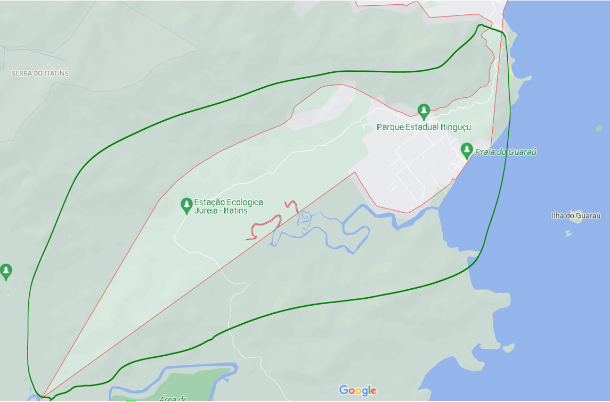

Somos um grupo Composto por três alunos do primeiro ano do ensino medio integrado ao curso tecnico de desenvolvimento de sistemas na Etec de Peruíbe - SP, onde por meio de um trabalho do componente de Geografia buscamos identificar problemas da cidade e de suas regiões, e com isso, idealizar projetos viavéis e racionais que possam tratar desses problemas.
Vazio vazio vazio vazio vazio vazio vazio vazio vazio vazio vazio vazio vazio vazio vazio vazio vazio vazio vazio vazio vazio vazio vazio vazio vazio vazio vazio vazio vazio vazio vazio vazio vazio vazio vazio vazio
Regionalização
Mapa de Peruíbe:

Fonte: Google Maps
Para fazer a regionalização utilizaremos critérios físicos e humanos, conforme orientado pelo professor em aula.
Regiões
Primeira região: Ambiental – para esta classificação utilizamos e percebemos as características da área, que abriga estações ecológicas, áreas de preservação, e praias, que também são protegidas, logo, decidimos chamar essa região de “ambiental”, que além de possuir as características já citadas, é uma área que possui muita mata. Vejamos:
Fonte: Google Maps
Segunda região: Central – como o próprio nome já nos leva a pensar, é a região que consideramos central, pois não fica longe do centro, é tudo bem próximo, e é uma região onde se encontra tudo que é preciso, bancos, supermercados, hospitais, muitos postos de gasolina, etc.

Fonte: Google Maps
Visão até agora:
Fonte: Google Maps
Terceira região: ambiental residencial – essa área contém mangues, e mais para o lado esquerdo(imagem do mapa abaixo), mata, porém, diferente da região ambiental, nessa área em geral há muitas residências, ocupação, por este motivo, nomeamos de ambiental residencial, sim é uma área muito grande, porém se encaixa nessas características, em alguns lugares obviamente a mata é mais fechada, mas como já foi dito, contém muitas casas.
Fonte: Google Maps
Quarta região: Residencial periférico | - o nome é intuitivo, escolhemos periférico por sua definição (afastado do centro em si), e residencial pois abriga muitas casas, famílias, e até alguns conjuntos habitacionais.

Fonte: Google Maps
Visão até o presente momento:
Fonte: Google Maps
Quinta região: Sul da linha do trem - É a parte de baixo da linha do trem(a mesma que já esta desativada), a região contém residências, comércios, e é bem parecida ao todo, e por mais que em alguns pontos seja mais habitada e mais comercial e em outros menos, utilizamos principalmente esta característica fisíca(Sul da linha do trem).

Fonte: Google Maps
Sexta região: Norte da linha do trem - É a parte de cima da linha do trem, assim como a parte Sul, contém residências, comércios, e também existem áreas menos habitadas e com baixo fluxo comercial, porém levamos em conta novamente a característica fisíca(Norte da linha do trem).
Fonte: Google Maps
Sétima região: Residencial periférico || - É o mesmo motivo do Residencial periférico |, é uma área residencial, e como fica afastada do centro, pode se usar o termo "periférico". Detalhadamente, em geral possui pouco comercial, e em alguns bairros, como o Vila Erminda, é super habitado, o que acaba gerando problemas, como falta de seneamento básico(em alguns casos), muito lixo na ruas, poluição automativa, etc.

Fonte: Google Maps
Problemas por região
Esta parte do site esta sendo atualizada, então não se preocupe com possíveis erros de ortografia e falta de informações, logo tudo sera resolvido. Agradecemos a compreensão. Para mais detalhes ou sugestões, fique a vontade para nos enviar um e-mail.
E-mail: pedrocodejob@gmail.com
Região 1:
Soluções
Região 2: Central
Os principais problemas dessa região são:
- Faltas de assoreamento de bueiros e canais(em alguns pontos somente), que tem como consequência as enchentes;
- Falta de iluminação ou manutenção da iluminação pública;
- Obras e terrenos abandonados. Inclusive temos uma obra pública, como o hospital. E quanto a obras e terrenos privados abandonados atualmente temos muito pouco, mas os que tem as vezes necessitam de limpeza, fiscalização, etc. E como consequência a saúde pública e a segurança podem ser prejudicados;
- Também temos problemas causados pela própria população, como:
- Jogar lixo nas ruas e em terrenos(o que contribui para com as enchentes e falta de higiene nas ruas);
- Em épocas de alta temporada muitos turistas vem a Peruíbe com intuito de passar as férias, descansar, e acabam ficando algumas semanas. Esses turistas acabam prejudicando a região de certa forma, pois jogam muito lixo nas ruas, principalmente nas praias, o que prejudica também a vida animal e a natureza. Temos essa falta de conscientização, essas pessoas não moram aqui, logo tem seus próprios costumes, porém, isso é uma questão de saúde pública, todos temos que colaborar para uma vida de qualidade, e também para uma cidade de qualidade.
- Árvores grandes nas calçadas. Isso causa grande "dor de cabeça" para a população, as árvores são importantes para nós, porém também podem atrapalhar se mal escolhidas, como veremos na imagem abaixo. Dentre os principais pontos temos: as raízes dessas árvores podem crescer bastante, quebrando a calçada, impossibilitando a passagem de pedestres, e até invadindo casas, e outra questão são as copas dessas árvores, que ao crescerem muito ficam rente ao fios, o que é perigoso, e pode gerar uma série de problemas.
- Falta de escoreamento do canal. O canal fica na rua da prefeitura, e há alguns anos não é limpo, assoreado, quando temos fortes chuva, as ruas em volta alagam, e todos ficam impossibilitados de passarem.

Fonte: Google Maps
Fonte: Google Maps

Fonte: Google Maps
Soluções
Região 3:
Soluções
Região 4:
Soluções
Região 5:
Soluções
Região 6:
Soluções
Região 7:
Soluções
Vazio vazio vazio vazio vazio vazio vazio vazio vazio vazio vazio vazio vazio vazio vazio vazio vazio vazio vazio vazio vazio vazio vazio vazio vazio vazio vazio vazio vazio vazio vazio vazio vazio vazio vazio vazio